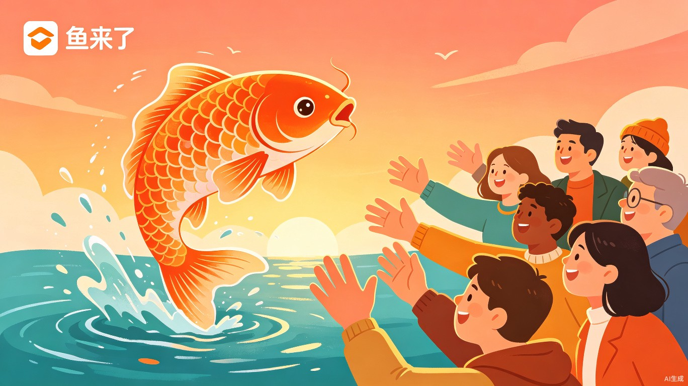
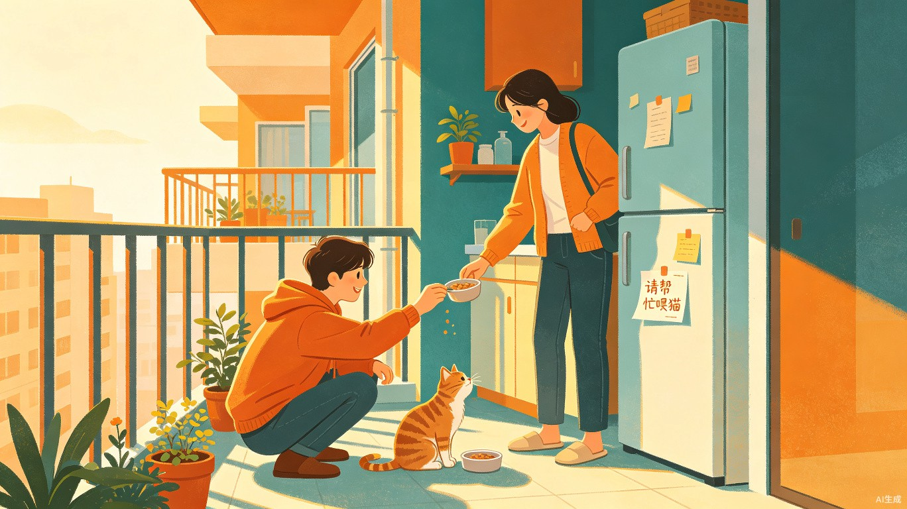
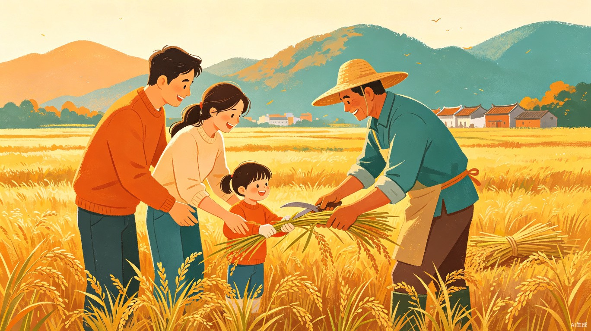
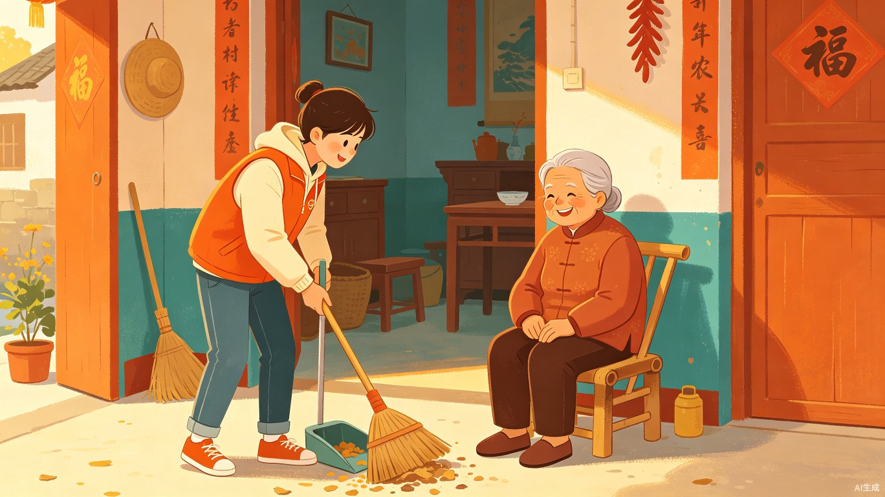
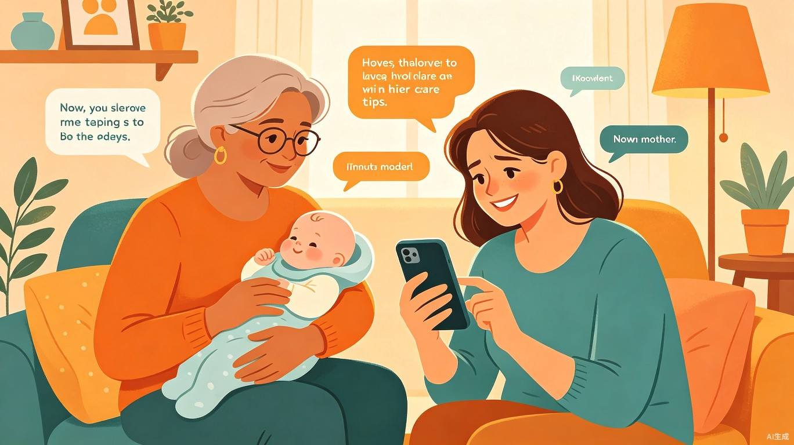
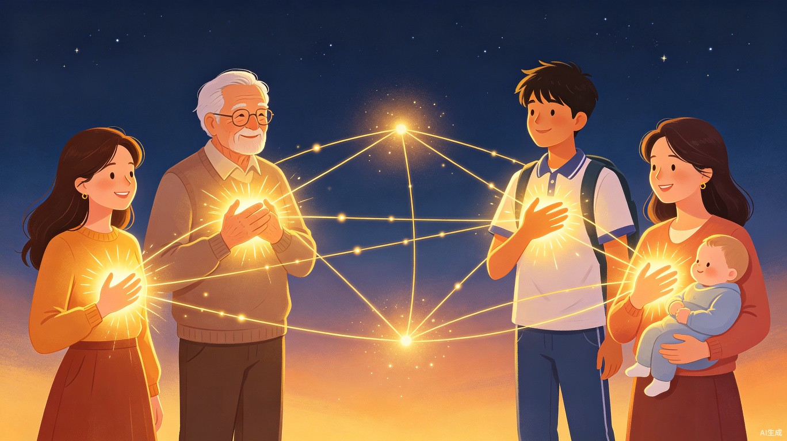

这个世界纷纷扰扰，谁都不敢相信对方。
出差不敢找人帮忙喂猫，怕欠人情。新手妈妈不敢问黄疸怎么处理，怕显得无知。独居老人不敢说需要人陪聊，怕给人添麻烦。
但其实——
你天大的烦恼，可能对某个人来说根本不是事。
你不好意思开口的事，有人刚好等着被需要。
勇敢说出你需要什么。不要焦虑。
鱼来了，就是让你开口的地方。
我是一条鱼。
忙的时候，为了一日三餐碎银几两，日复一日。忙碌，但不知道这份忙碌有什么意义。
闲的时候，刷手机、发呆。空虚，觉得自己没用。
但我知道这个世界需要我。
不是需要我加班，不是需要我消费，而是需要我这个人——我的力气、我的经验、我的善意、我的时间。
我只是不知道，这个世界在哪里需要我。
出差的人需要我帮忙喂猫——原来我的碎片时间这么值钱。
河源的稻田需要人帮忙收割——原来我的一双手能创造这样的体验。
村里的独居老人需要人陪聊——原来我的存在本身，就是别人的温暖。
新手妈妈不知道黄疸怎么处理——原来我带过娃的经验，能救人于焦虑。
不是只有赚大钱、做大事才叫价值。帮一个人喂猫是价值，帮一个人割稻谷是价值，帮一个人解答困惑是价值，陪一个老人聊天也是价值。
鱼来了 — 让每一条鱼，都能看见自己的光。
发现的四个真实问题
生活中有太多"小事"，找个专业机构太贵，找朋友欠人情，自己忍着又一直没解决。与此同时，身边有大量有空闲的人——他们愿意出力、愿意体验、愿意行善、愿意分享经验——但信息完全不对称，供需双方彼此看不见。
城市临时帮忙找不到人
出差一个月，家里的猫需要隔几天喂一下。送去宠物寄养太贵且猫容易应激，周边没有相关设施，但附近一定有人愿意帮忙，只是彼此不认识。
城乡体验需求没有入口
老家河源有3亩稻谷需要人帮忙割，雇人太贵不划算，但管顿饭、提供体验就有人愿意来。城里人也想带孩子体验农村生活，但没有渠道发现这些机会。
独居老人的声音传不出去
村里独居老人需要人帮忙打扫卫生、修灯泡、陪聊天，但他们不会用互联网发消息。热心人想做志愿者，却不知道谁需要帮助、在哪里需要。
个人经验找不到出口
宝妈知道新生儿黄疸怎么处理、装修过的知道避坑指南、养猫多年的能判断猫为什么不吃饭——这些经验对当事人是常识，对正经历的人是救命稻草。但缺少一个轻量的渠道让经验流通。
产品方案：四大模式
"鱼来了"不是传统的跑腿平台，不是家政平台，不是任务众包，也不是问答社区。它是一个社区微需求互助平台，用四种模式覆盖生活中从体力到智慧的全部"帮忙"场景。
有偿帮
付佣金，找身边人帮个小忙
喂猫、搬家、搬重物、代排队
出门+出钱体验帮
管饭或零成本，换一段新鲜体验
割稻谷、摘果子、体验农家
出门+体验志愿帮
零报酬，帮一个真正需要的人
帮老人打扫、陪聊、修家电
出门+善心咨询帮
动动嘴，用经验和智慧帮人
育儿、装修、养宠、旅行建议
不出门+智慧典型使用场景
场景一：出差喂猫（有偿帮）

解法：在"鱼来了"发布求助，附近500米内有空的人接单，隔2天上门喂一次，佣金50元/次。
场景二：河源割稻谷（体验帮）

解法：发布"体验任务"，城里人带孩子来体验农村生活，既帮了忙又有了亲子教育的机会。
场景三：独居老人帮扶（志愿帮）

解法：子女或村委会代发需求，平台推送给附近的热心志愿者，定期上门帮助。
场景四：新手妈妈求助（咨询帮）

解法：在"鱼来了"发布咨询，带过娃的二胎妈妈在线分享经验，3分钟解答困惑。
咨询帮：用认知帮人，不出门也行
咨询帮是唯一一个不需要出门的模式。每个人都有自己的经验盲区，但同时也都有自己擅长的领域。这些经验分散在每个人脑子里，"鱼来了"让它们流通起来。
育儿经验
黄疸怎么处理、哭闹怎么安抚、辅食怎么添加
装修避坑
哪些材料别买、哪个工长不靠谱、水电怎么走
养宠经验
猫不吃东西怎么办、狗总叫怎么训练、换粮怎么过渡
旅行规划
第一次去泰国怎么玩、带孩子去哪合适、穷游攻略
职业建议
简历怎么写、面试怎么说、转行值不值得
生活窍门
衣服染色怎么洗、养花黄叶怎么办、做饭小技巧
四种互动形式
| 形式 | 说明 | 适合场景 |
|---|---|---|
| 文字问答 | 发个问题，有人回复 | 黄疸怎么处理、猫不吃东西 |
| 语音聊聊 | 3-5分钟语音通话 | 装修避坑、育儿焦虑 |
| 帮看一眼 | 上传照片/截图，对方给意见 | 看简历、看皮肤、看植物 |
| 出谋划策 | 描述情况，对方帮分析 | 旅行规划、职业选择 |
核心使用流程
无论哪种模式，流程统一且极简：
发布需求
鱼来了匹配
双方确认
执行/交流
评价分享
击鼓机制：紧急程度分级
不同困难有不同的紧急程度。平台用"击鼓"来表达——一声鼓是日常求助，五声鼓是十万火急。鼓声越多，推送范围越广，响应越快。
| 击鼓等级 | 紧急程度 | 时间范围 | 典型场景 | 推送范围 |
|---|---|---|---|---|
| 🥅 一声鼓 | 不急 | 一周内 | 下周搬家需要帮手、下月出差找人喂猫 | 社区/附近 |
| 🥅🥅 二声鼓 | 一般 | 1-2天内 | 明天需要人帮忙浇花、后天帮忙搬东西 | 附近5公里 |
| 🥅🥅🥅 三声鼓 | 较急 | 今天内 | 锁坏了进不了家门、孩子突然发烧需要照看 | 全城推送 |
| 🥅🥅🥅🥅 四声鼓 | 紧急 | 1-2小时内 | 水管爆了需要帮忙、老人摔倒需要人扶 | 全城+声音提醒 |
| 🥅🥅🥅🥅🥅 五声鼓 | 十万火急 | 立刻 | 迷路走失求助、紧急安全事件 | 全城+弹窗+声音 |
击鼓的文化底蕴
"击鼓"在中国文化里天然有"召集、紧急、求助"的含义——古代击鼓鸣冤、击鼓传信、击鼓升堂。把紧急程度变成"擂几声鼓"，不再是冰冷的"高/中/低"标签，而是有温度、有画面感、有文化根基的交互方式。三声鼓以上的帮助方会收到特殊推送提醒（不同的鼓声音效），五声鼓全城推送——擂鼓求助，八方响应。
防滥用机制
虚假击鼓（谎报紧急）会扣除鱼的"光芒值"并降级。每次击鼓都记录在案，五声鼓触发后平台会跟进确认，确保紧急求助通道不被滥用。
目标用户画像
| 角色 | 典型人群 | 动机 |
|---|---|---|
| 需求方（有偿帮） | 城市白领、学生、年轻家庭 | 临时遇到生活小困难，花钱不多就能解决 |
| 需求方（体验帮） | 农民、果园主、乡村居民 | 需要帮手但预算有限，可以提供体验和餐饮 |
| 需求方（志愿帮） | 独居老人、乡村困难群体 | 需要生活帮助但无力支付，情感陪伴需求 |
| 需求方（咨询帮） | 新手父母、装修小白、养宠新人 | 遇到问题不知道问谁，需要真人经验而非搜索结果 |
| 帮助方（鱼） | 大学生、宝妈、自由职业者、退休老人、亲子家庭 | 赚零钱 / 体验新鲜事 / 做善事 / 分享经验 |
对比现有方案的差异化优势
| 对比维度 | 跑腿平台 | 家政平台 | 问答社区 | 鱼来了 |
|---|---|---|---|---|
| 交易属性 | 纯金钱交易 | 纯金钱交易 | 纯知识问答 | 金钱+体验+公益+智慧 |
| 信任门槛 | 高 | 中 | 低 | 低（社区+LBS） |
| 任务粒度 | 标准化配送 | 标准化家政 | 文字问答 | 极细粒度（喂猫到聊天到咨询） |
| 用户粘性 | 低 | 低 | 中 | 高（多维场景、社交传播） |
| 社会价值 | 弱 | 弱 | 中 | 强（城乡连接、助老、知识流通） |
| 传播性 | 差 | 差 | 中 | 强（割稻谷、帮老人天然适合分享） |
产品价值与意义
不是每一份空闲，都只能刷手机。出力、出心、出主意，总有一种帮得上。
独居和空巢老人
大量在乡镇农村，缺的不是钱，是有人。
飞轮模式
有偿帮造血、体验帮获客、志愿帮树品牌、咨询帮提活跃。
看见自己的光
让每个人在帮助他人中发现自己的价值与意义。
社会价值
连接城市与乡村、年轻人与老人、需求与善意、问题与经验。填补专业服务和友情帮忙之间的空白市场，让"帮忙"的门槛降到最低。志愿帮让善意不再因"不知道谁需要"而浪费。体验帮创造城乡之间全新的连接方式。咨询帮让碎片化的个人经验变成可流通的社会知识，降低知识获取门槛。
个人价值
让每个人在帮助他人的过程中，重新发现自己的价值和意义。不是只有赚大钱、做大事才叫成功，帮一个人喂猫、陪一个老人聊天、分享一条育儿经验，都是发光。产品通过"价值面板"等功能，让用户的每一次帮助都被看见、被记录，形成持续的正向激励——帮助别人，也是帮助自己找到活着的意义。
商业价值
有偿帮模式可形成可持续的佣金抽成收入。体验帮和志愿帮带来巨大用户增长和社交传播效应。咨询帮大幅提升用户活跃度（碎片时间即可参与）。四者形成飞轮——有偿帮造血，体验帮获客，志愿帮树立品牌，咨询帮沉淀关系。
鱼的成长：从鱼蛋到鲸鱼
每条鱼从鱼蛋开始，靠帮人一步步长大。等级越高，代表越值得信任。不是花钱买的认证，是实打实帮出来的信用。社区里人人都是鱼蛋过来的，鼓励给新手鱼蛋机会。
| 等级 | 名称 | 升级条件 | 说明 |
|---|---|---|---|
| Lv.0 | 🥚 鱼蛋 | 新注册 | 刚来平台，还没有帮过人 |
| Lv.1 | 🐟 小鱼苗 | 帮过 1-3 个人 | 刚开始发光，需要被信任 |
| Lv.2 | 🐠 小鱼 | 帮过 4-10 人 + 2张好人卡 | 有信任基础，可接更多任务 |
| Lv.3 | 🐡 大鱼 | 帮过 11-30 人 + 8张好人卡 | 社区认可的可靠帮手 |
| Lv.4 | 🐜 飞鱼 | 帮过 31-100 人 + 20张好人卡 | 高信任度，优先推荐 |
| Lv.5 | 🐋 鲸鱼 | 帮过 100+ 人 + 50张好人卡 | 社区传奇，平台"金牌鱼" |
好人卡机制
被帮助方在任务完成后，可以给帮助方送一张好人卡。普通好人卡是完成服务后自动获得，金色好人卡是需求方主动额外赠送，代表特别感谢。好人卡总数直接影响等级晋升和平台推荐权重。"谢谢你帮我，送你一张好人卡"——有温度的信任传递。
为什么这套体系比传统星级好
传统平台的星级从1到5，枯燥且没人分享。"我从鱼蛋变成飞鱼了"天然适合社交传播。更重要的是，鱼蛋虽然是新手，但人人都是鱼蛋过来的，社区氛围鼓励给鱼蛋机会——这解决了新用户冷启动信任难题。等级名称有画面感、有成长感、有故事性，让"信任"不再是冰冷的数字。
安全与信任机制
| 核心风险 | 解决方案 |
|---|---|
| 安全问题（陌生人上门） | 实名认证 + 微信支付分 + 服务轨迹记录 + 社区熟人优先匹配 |
| 服务标准不统一 | 需求方勾选"拍照/视频反馈"，帮助方上传凭证 |
| 双方爽约 | 佣金平台托管，完成后释放；爽约扣分扣押金 |
| 老人不会用手机 | 子女代发 + 村委会代发 + 电话转文字 + 定期回访模板 |
| 咨询帮经验不准 | 回答点赞/采纳机制 + 经验标签体系 + 纠错与补充机制 |
| 匹配效率低 | LBS + 兴趣标签 + 鱼的等级权重，精准推送 |
| 新用户冷启动信任 | 鱼的等级体系：人人从鱼蛋开始，社区鼓励给鱼蛋机会 |
产品形态与规划
第一阶段：微信小程序 MVP
以微信小程序为载体，快速验证核心功能。包含"发布需求"、"浏览任务"、"接单确认"、"在线咨询"、"服务反馈"、"评价分享"六大核心模块。先聚焦一个城市/社区做闭环验证。
第二阶段：APP + 社区拓展
开发独立APP，增加LBS地图视图、智能推荐、用户信用体系、经验标签体系、社区圈子等功能。拓展到更多城市和乡村场景。
第三阶段：生态化运营
与村委会、社区服务中心、志愿者组织合作，建立"信息员"体系。接入智能匹配算法。探索与养老、农业、文旅、母婴等领域的跨界合作。
不只是交易，是让你看见自己的光
其他互助平台只记录交易，"鱼来了"记录价值。用户不只是来交易的，是来找到"我活着有用"这种感觉的。

帮过多少人
"你已经帮过23个人了"——数字就是力量，让每一次帮助都被看见。
你的经验帮过谁
"你的育儿建议帮助了5位新手妈妈"——你的经验比你想象的有价值。
影响力地图
以你为中心，辐射出去的 ripple effect 可视化——你的一举一动，正在改变别人的生活。
价值日记
自动生成"你的本周闪光记录"——帮了谁、说了什么、产生了什么影响，形成持续的正向激励。
鱼的光芒值
基于帮助次数、好评、影响力累积的积分系统。光芒值可以兑换实物奖励，也可以捐赠给公益项目——让帮助别人这件事本身，也能产生更大的善意循环。
一句话总结
鱼来了 — 你有需要，鱼来了。你需要发光，鱼来了。让每一条鱼，都能看见自己的光。